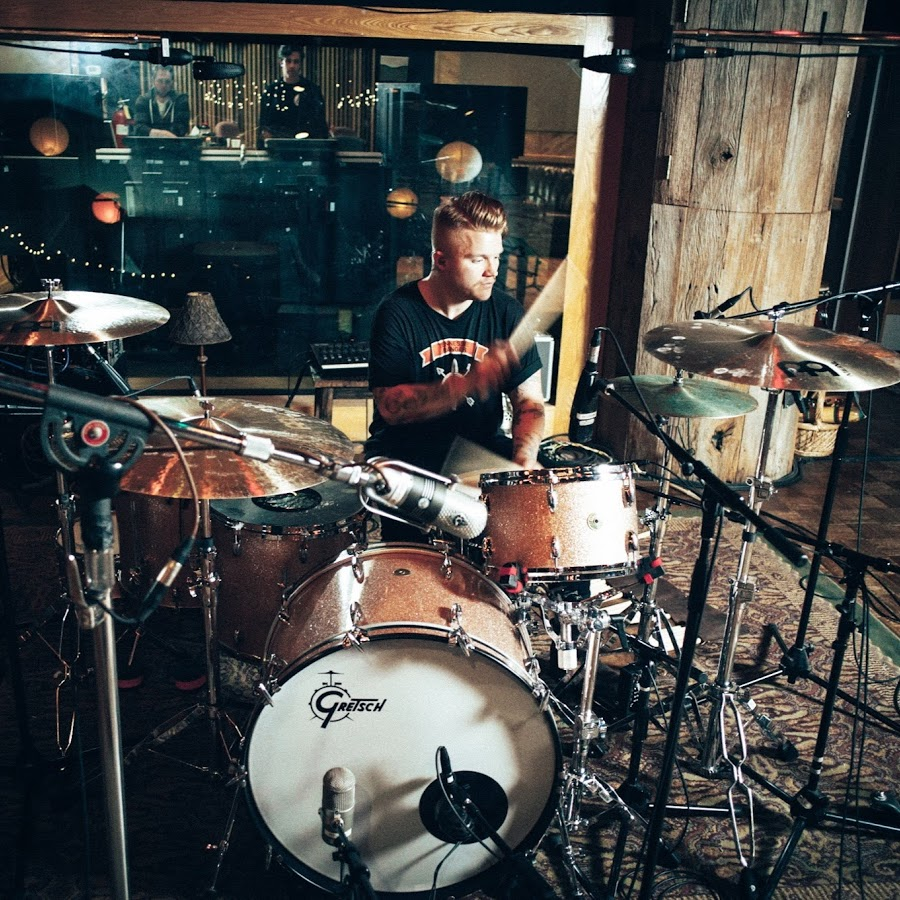
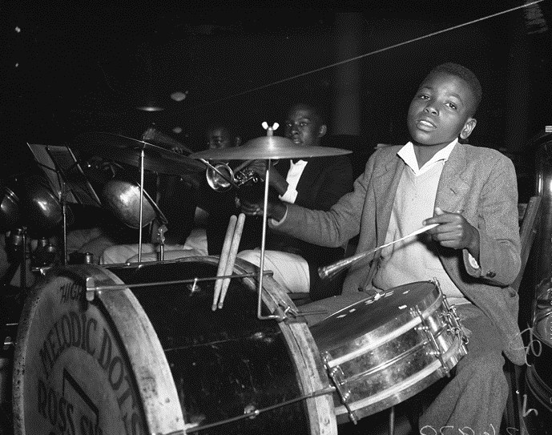
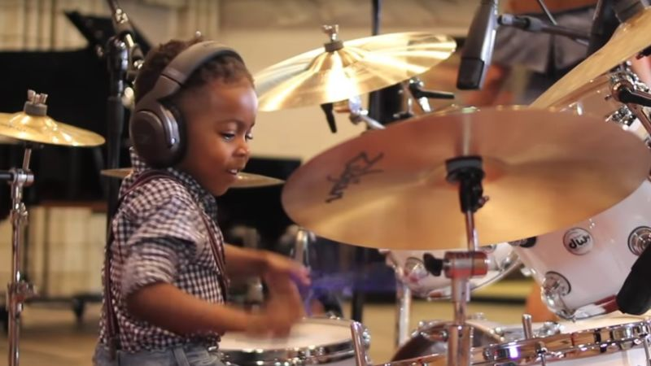
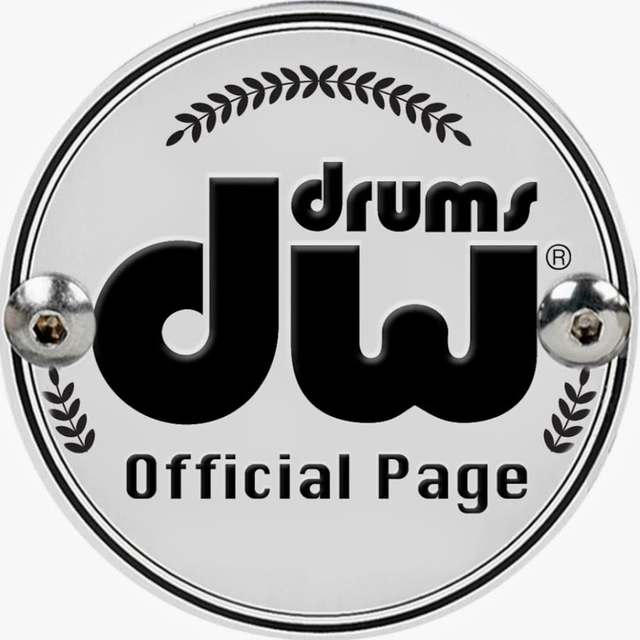

|  |  |  |  |
Credit:Aaron GillespieLos Angeles Times photographic archive, UCLA Library Matt GreinerWilson's World: LJ Drum Workshop Inc.
Drumming is one of my favorite activities in the world.
I've been playing on and off since 2004.
My favorite styles of music to play on drums are rock, hip-hop, indie, and funk.
My current drumset is a pearl white 2001 DW collector's series 5-piece kit.
On my kit, I use a Zildjian cymbal set conisting of a 23" A Sweet ride, 20" A crash, 18" A crash, and 15" New Beat A hi-hats.
However, I am also a big fan of Paiste and Meinl cymbals.
Zildjian cymbals are one of the best in my opnion, because they can be used in virtually any genre of music.
Their distinct sound and durability make them a prominent cymbal choice in the drumming world.
Meinl cymbals are also a great choice. They create a smooth and crisp sound when played lightly, but also provide a powerful, reverberating sound when crashed that makes its mark in the mix.
An example of these cymbals are shown by Adam Tuminaro the Orlando Drummer
and Aaron Gillespie of Underoath.
Whether you play jazz, metal, hip-hop, or indie rock, Zildjian and Meinl cymbals are an excellent choice.
Like cymbals, there are many great and well-known drum-head brands that offer a unique variety of sound to performers of all types. These circular ply or plies of polymer that the drummer hits with his or her sticks are what create the flavor of sound for a drumkit. Some of the most widely used drum-head manufacturers are Remo, Evans, and Aquarian.
My personal favorite is Remo. Created by Remo Belli in 1957, Remo drumheads offer durability, along with reliable tone and power that help the drums stand out in the music. Remo drumheads, arguably, are the most prominent drum heads used by drummers from around the globe with Evans being a leading competitor.
Sometimes overlooked, but an essential element to drumming are the drumsticks. While brand can ultimately be summarized into personal choice, what does matter are the style and size of the sticks. Stick size can have an impact on a drummer's 'sound' and can be an important detail in certain genres. For example, many rock drummers like to use thicker-sized sticks such as 5B and 2B, while a jazz player might use a lighter stick such as 5A or 7A. Drumsticks also come in many different styles that create unique sounds. Brush sticks are commonly used in jazz, blues, and any style of music that requires a soft percussion playing style. Mallets are used by drummers for cymbal swells and rolls. My personal choice of drumsticks are the Vic Firth 5Bs.
If you would like to contact me with questions regarding this page, drumming, or anything else, you may email me at lovelandtm@mail.irsc.edu.